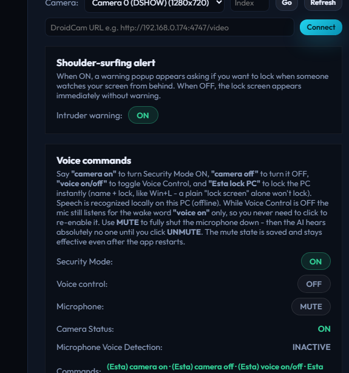
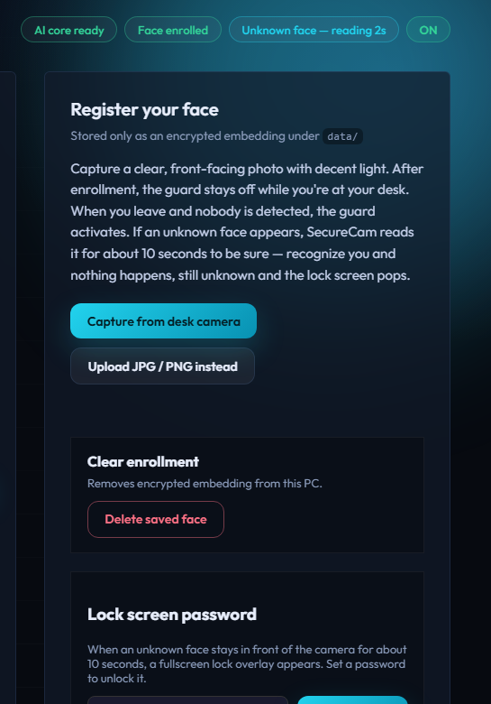

01 · Features
Everything runs locally — camera, face AI, voice recognition. No accounts, no cloud, no subscriptions.
Stranger auto-lock
An unknown face is read for 5 seconds. Still unknown? The screen locks and Ava warns “Sorry, you are not the owner of this system” — once per lock.
Animated face tracking
Every face gets a glowing box with a sweeping scanline plus a live face counter on the smooth 720p preview.
Offline voice control
camera on/off · voice on/off · Esta lock PC (instant Win+L). Wake word works even with Voice Control off.
Mic MUTE
One click fully shuts the microphone down — not even the wake word listens. Saved permanently until you unmute.
Guard announcements
“Guard active.” when you leave the desk, “Welcome back” when you return, shoulder-surfing alerts included.
Real lock, zero setup
With a password you get the SecureCam overlay; without one, strangers still hit a real Windows lock (Win+L).
02 · Screenshots
The real app, running live.


03 · Setup — from zero to guarding in 5 minutes
You need: Windows 10/11 64-bit, a webcam, a microphone (for voice), internet once (downloads).
Download & extract
Grab the ZIP above and extract it anywhere, e.g. C:\CAMER-SECURE-SYSTEM. Inside you'll find SecureCam.exe.
Run the one-click setup
Double-click SETUP-CAMER-SECURE-SYSTEM.exe (or SETUP-AND-RUN.bat). It automatically: installs Python 3.12 if missing → installs all AI packages → creates a Desktop icon → launches the app — and prints how to launch & activate. The face-AI model (~300 MB) downloads itself on first launch; the voice model is already bundled.
Launch
Double-click SecureCam.exe (or the Desktop icon). First start takes ~30 seconds (AI warming up). Then activate it below ↓
No internet for the auto-installer? Install Python 3.12 from python.org (tick Add to PATH), then in the extracted folder run "C:\Program Files\Python312\python.exe" -m pip install -r requirements.txt.
04 · Activate — add your face pic & password
Three switches inside the app and you're protected.
Add your face pic — Register your face section
- Capture from desk camera — sit in good light, hold still, click. or
- Upload JPG / PNG instead — pick a clear front-facing photo.
Only an encrypted embedding is stored (data\face_embedding.enc) — never your photo. Delete saved face wipes it.
Set the unlock password — Lock screen password section
Type 4+ characters → Set password. A stranger lock can only be dismissed with this. No password yet? Strangers still get locked out via real Windows lock (Win+L) — set a password anytime for the SecureCam-style overlay.
Turn guarding ON — Security Mode toggle
Switch Security Mode ON (top of Voice commands, or say camera on). Statuses to expect: You are here (you're present) → GUARD ACTIVE (desk empty) → Unknown face — reading Ns → LOCKED.
Talk to it (optional) — Voice commands
| Say | Does |
|---|---|
(Esta) camera on / off | Security Mode ON / OFF |
(Esta) voice on / off | Voice control ON / OFF |
Esta lock PC | Locks Windows instantly |
Voice Control OFF still hears the wake word “voice on”. MUTE silences the mic completely, forever until you unmute.
05 · FAQ
Quick answers to the common gotchas.
Stranger detected but no lock screen appeared?
You hadn't set an unlock password yet (older builds skipped the lock then). v1.0.0 always locks: password overlay if set, otherwise a real Windows lock (Win+L). Set a password for the SecureCam-style screen.
Preview lagging?
v1.0.0 runs the camera pump + face AI on background threads at 720p/30fps. If it's still choppy: close heavy apps (the AI likes a free CPU), make sure Security Mode is ON, and keep the camera at 1.0× zoom.
“Camera issue / Could not open camera”?
Close other apps using the webcam (Zoom, Teams, browser). Replug USB cameras. Then restart the app — it retries automatically.
Voice commands not heard?
Turn Voice control ON, check Microphone Voice Detection: ACTIVE, speak clearly. If it says MUTED, click UNMUTE — muted means nobody can ever be heard, by design.
Is my face / voice sent anywhere?
No. Face embeddings, password hashes and voice recognition all stay in the app's local data\ folder on your PC. That's also why data/ is never uploaded to GitHub.